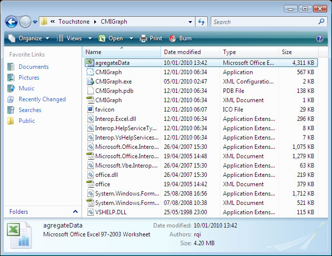

Contents
This part of the help is directed at users with good knowledge of using Microsoft Excel Spreadsheets.
aggregateData.xls is a spreadsheet that is automatically installed when CMIGraph is installed. you can find it usually under program files as shown in the figure below

agregateData.xls is the main container of the "Count Me In" data on a national, regional and local levels. This file contains the Data for Leeds and the Yorkshire and Humber Strategic Health Authority STH, but it can be altered to enable the CMIGraph software to display graphs for a different local area in even a different strategic health authority (STH).
the following three sections have a detailed description of the layout of the agregateData.xls spreadsheet which will enable you as a professional Excel user to alter the local and even the regional data.